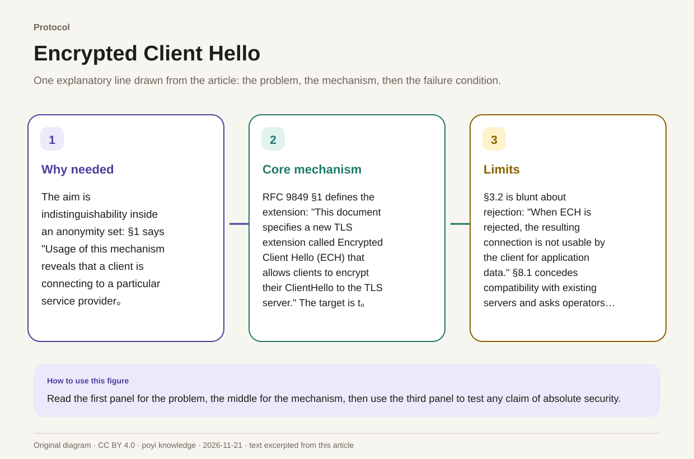
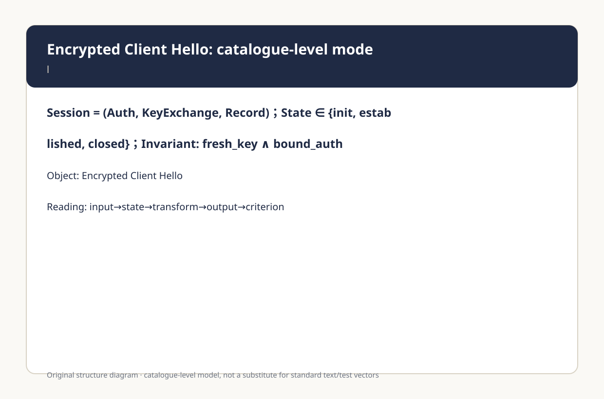

Principles
Protocol: Encrypted Client Hello (加密客户端问候). RFC 9849 §1 defines the extension: "This document specifies a new TLS extension called Encrypted Client Hello (ECH) that allows clients to encrypt their ClientHello to the TLS server." The target is the plaintext SNI, described as "perhaps the most sensitive information left unencrypted in TLS 1.3." §3.2 gives the mechanics: the client builds a private ClientHelloInner and a public ClientHelloOuter which "contains innocuous values for sensitive extensions and an “encrypted_client_hello” extension". §5 fixes the code point: "enum { encrypted_client_hello(0xfe0d), (65535) } ExtensionType;".

Why it matters
The aim is indistinguishability inside an anonymity set: §1 says "Usage of this mechanism reveals that a client is connecting to a particular service provider, but does not reveal which server from the anonymity set terminates the connection." §3.2 restates that as the primary goal and adds, in a lowercase should, that "it should achieve this goal without affecting any existing security properties of TLS 1.3". §10.1 lists the goals, including "3. Downgrade resistance. An attacker cannot downgrade a connection that attempts to use ECH to one that does not use ECH." while §1 concedes "ECH is not in itself sufficient to protect the identity of the server."
Applications
Configuration rides on HPKE: §4 "ECH uses Hybrid Public Key Encryption (HPKE) for public key encryption" and requires "Clients MUST ignore any ECHConfig structure with a version they do not support." §6.1 governs offering, with the inner hello forbidden to say "It MUST NOT offer to negotiate TLS 1.2 or below." to avoid version mismatch; §6.2 lets "a connection between an ECH-capable client and a non-ECH server to appear to use ECH". §9 mandates one HPKE cipher suite: DHKEM(X25519, HKDF-SHA256), HKDF-SHA256 and AES-128-GCM.

Limits & attacks
§3.2 is blunt about rejection: "When ECH is rejected, the resulting connection is not usable by the client for application data." §8.1 concedes compatibility with existing servers and asks operators to "SHOULD ensure servers understand a given set of ECH keys before advertising them". §10.2 notes configuration delivery over DNS carries no authenticity — "any attacker which can inject DNS responses or poison DNS caches" can inject or strip it, while arguing that a DNS-controlling attacker could simply change the IP address anyway. §10.5 warns that outer fields leak inner properties: the client "SHOULD NOT send values in the ClientHelloOuter which would reveal a sensitive ClientHelloInner property, such as the true server name."
History
RFC 9849 is signed by E. Rescorla (Independent), K. Oku (Fastly), N. Sullivan (Cryptography Consulting LLC) and C. A. Wood (Apple), published March 2026 with Category: Standards Track. §1 scopes it: "ECH is supported in TLS 1.3 [RFC8446], DTLS 1.3 [RFC9147], and newer versions of the TLS and DTLS protocols." the same paragraph notes that encrypted DNS and similar measures are needed alongside, since SNI encryption is not a standalone fix.
Worked example & verification
Formal model and reproduction steps
[\mathrm{Adv}^{\Pi}_A(\lambda)\le n\cdot\mathrm{Adv}^{\mathrm{prf}}F(\lambda)+\varepsilon{\mathrm{aead}}(\lambda)]
Encrypted Client Hello: the registered public parameters, key material or randomness, and message are mapped through the stated transformation to an output checked against the registered criterion. The worked example is a structural reproduction, not a new test vector; parameter ranges, standard versions and implementation details remain source-bound.
References
- Wikipedia search entry for 加密客户端问候. https://zh.wikipedia.org/w/index.php?search=%E5%8A%A0%E5%AF%86%E5%AE%A2%E6%88%B7%E7%AB%AF%E9%97%AE%E5%80%99
- Handbook of Applied Cryptography (Menezes, van Oorschot, Vanstone). https://www.cacr.math.uwaterloo.ca/hac/